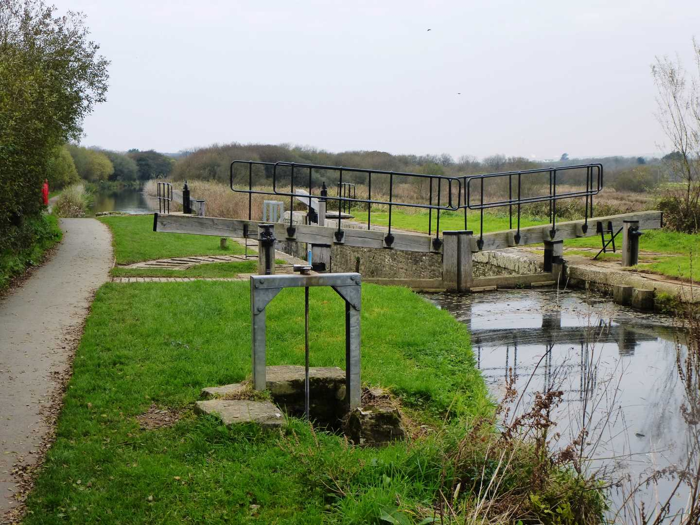

Start Ref: 205 067
End Ref: 205 067
Distance: 7.75 miles
Time: 2.5 -3hrs
This walk, is dedicated to a very good friend, who is a native of these parts (and suggested this area to walk) but she has since moved south further into Cornwall.
For this walk we left the car in Summerleaze car park in Bude (at a very reasonable parking charge for Cornwall) and headed South West across the beach towards the little footbridge which leads you over the last section of the Bude Canal, and after crossing over and exploring the Breakwater, we headed South and up on to the top of the headland to admire the lookout building on Compass Point. From here, we were greeted with fine views both North and South, before making our way again South along the coastal footpath, but within the fields so never really feeling to exposed. This section of the coastal path is actually quite flat and reminded me very much of North Cliffs at Portreath - even to the point of being able to see a radio station!!

We pass by Efford Beacon and within no time the path came close alongside the road at Upton. Here, you could walk East down the road at Upton and join up with the Bude Canal path in approx. 3/4 mile, therefore shortening your walk. However, we decided (as the path was easy) to push on and follow the path, which is just off the road, past a hotel and down towards a little headland called Lower Longbeak where there is a Tumulus at its head which appears to be made as if to sit and ponder with views over Widemouth Sands. Just after this we reach the old Salthouse, and here left the coastal path, as we crossed over the road (North East direction) and into the fields, where it is well signposted, and relatively straight, for 5 fields, slowly dropping in height until you arrive down by the main A39 and the start of the Bude Canal as it is sectioned off from the River Neet or Strat (even the map marks this river with two names!). Although the map shows that you join the A39 for a brief period, there is a permissive path through the car park of the business at the bottom of the fields, so you can walk straight on to the Bude Canal Path.
You are now on flat and even ground and will be now until you reach Bude. However, it would be unfair on thissection of the walk to leave it at that. After about a mile you cross over the small road leading down from Upton (where you could have turned off), and all along the length of the footpath are spectacular wooden chain links of about a meter in height - all of which are named - and worth looking at. Not to mention the lock gates which are also a feature of this section.
After passing the bird haven, the canal opens up and suddenly you find yourself alongside the car park by the visitor centre, from which it is a simple case of following the canal to the beach and then back across the footbridge to head to your car.
I hope that you enjoy.